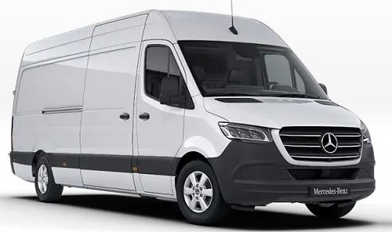

Послуги sprinter
Як планувати переїзд
Перевага професійних вантажних перевезень
Етапи планування перевезення вантажів та майна
На нашому рахунку 15000
якісно виконаних переїздів
Більша частина вантажних перевезень у межах міста це квартирні та офісні переїзди Кожен переїзд в не залежності від кількості речей – це довготривалий та складний процес, який необхідно правильно спланувати та здійснити інакше втрата дорогоцінного часу та пошкодження майна неминуча.
Більша частина вантажних перевезень у межах міста це квартирні та офісні переїзди Кожен переїзд в не залежності від кількості речей – це довготривалий та складний процес, який необхідно правильно спланувати та здійснити інакше втрата дорогоцінного часу та пошкодження майна неминуча.
Для того щоб написати нам, замовити переїзд чи поставити питання, просто заповніть цю форму

ЯК ПЛАНУВАТИ ПЕРЕЇЗД
Плануючі вантажні перевезення необхідно перш за все оцінити наступні критерії:
Кількість речей;
Наявність складних речей (електротехніки, посуду, антикваріату, медичних препаратів, кімнатних рослин великого розміру);
Дальність маршруту перевезення;
Терміни переїзду.
Об`активно оцінивши перераховані фактори можна починати підготовку та планування переїзду.
Перевага професійних вантажних перевезень
Плануючі вантажні перевезення необхідно перш за все оцінити наступні критерії:
Кількість речей;
Наявність складних речей (електротехніки, посуду, антикваріату, медичних препаратів, кімнатних рослин великого розміру);
Дальність маршруту перевезення;
Терміни переїзду.
Об`активно оцінивши перераховані фактори можна починати підготовку та планування переїзду.
Етапи планування перевезення вантажів та майна
- Першим логічним питанням постає правильне пакування речей для подальшого транспортування:
- Варто завчасно подумати про те як правильно пакувати меблі, техніку, папери, архів, крихкі речі, одяг, канцелярські товари та побутові дрібниці.
- Для всього, що має достатньо велику вагу, починаючи з тяжких документів і закінчуючи комп`ютерною технікою та меблями, необхідно підготувати містки та міцні ящики де можна компактно розмістити все необхідне.
- Ті меблі та техніку які можливо розібрати завчасно необхідно підготувати та від`єднати всі дроти та кріплення, спакувати все у спеціально відведену тару, після чого бажано закрити кришками або заклеїти широкою липкою плівкою.
- Ящики з технікою необхідно промаркерувати для того щоб при переміщенні випадково їх не пошкодити
- Решту ящиків та мішків можна пронумерувати та помітити літерами – це дозволить краще орієнтуватися у переліку майна при переїзді та після його завершення, при розпакуванні речей. Якщо об`єктів багато, маркування є необхідним щоб переїзд не став проблемою.

Квартирний переїзд – складна задача для кожної людини, кожен у кого хоч раз у житті була необхідність переїзду до нового будинку чи квартири, точно знає про те як це складно. Є безліч нюансів які обов’язково потрібно врахувати, і деякі правила, яких необхідно дотримуватись. Є послідовність дій які допоможуть організувати переїзд легко та швидко. Все це вміють професійні мувінгові компанії до яких все частіше звертаються за допомогою.
Офісний переїзд – ціла подія, до організації якої потрібно підходити максимально відповідально. Офісний переїзд відрізняється від квартирного деякими складностями, і це важливо враховувати при плануванні.

Складання-розбирання меблів
Зміна місця проживання або, наприклад, переїзд до нового офісу часто включає розбирання меблів, його перевезення та подальше складання. Цей процес вимагає чимало фізичних зусиль, певних навичок, терпіння, а ще потрібно мати необхідні інструменти і, звичайно, достатньо часу на виконання робіт. Якщо ж зробити все нашвидкуруч і без досвіду в збиранні меблів, це може призвести до подальшого псування вашого майна.